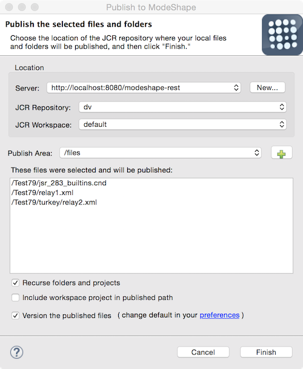

The Publishing Operations Dialog is used to publish and unpublish workspace selected files and folders to/from repository workspaces. When publishing, the selected files will be uploaded to the selected repository workspace publish area. When unpublishing, the selected files will be removed from the selected repository workspace (if they exist there). See the ModeShape Preference Pages to identify the file extensions and folder names you don't want involved in publishing operations. Here is what the Publishing Operations Dialog looks like:
The dialog consists of the following controls:
| Server Combo | allows selection of a registered ModeShape server (the ModeShape View lists all the registered servers) |
| New Server Button | use to create and register a new server that is hosting one or more ModeShape repositories (see the Server Dialog) |
| Repository Combo | allows selection of a repository found hosted on the selected server |
| Workspace Combo | allows selection of a workspace of the selected repository |
| Publish Area Combo | allows selection of a known root path in the workspace where files will be sequenced |
| Add Publish Area Button | displays a dialog that can be used to create a new workspace publish area |
| Resources List | a list of all the selected files that will be published or unpublished |
| Recurse Checkbox | when checked will recursively select all files within any selected folders |
| Version Checkbox | when checked, the files being published will be marked as versionable within the ModeShape repository (initially set to the preference value). If disabled, the selected ModeShape repository either does not support versioning or does not have versioning enabled. |
| Preference Page Link | selecting this link will open the General Settings Preference Page where you can modify the setting that determines if published files will be marked as versionable by the ModeShape server |
A server must be selected before a repository can be selected. Likewise, a repository must be selected before a workspace can be selected. And finally, a publish area must be selected in order for the publishing operation to be able to run. The message area at the top of the dialog will indicate the type of operation (publish or unpublish) and if there is any missing information. The publish area is a path segment in the workspace that will be used as the root path for the publishing operation. Select the 'Finish' to run the publishing operation. Publishing operations can be run in the background so that multiple operations can be run at the same time. The ModeShape Message Console displays output from the operations.